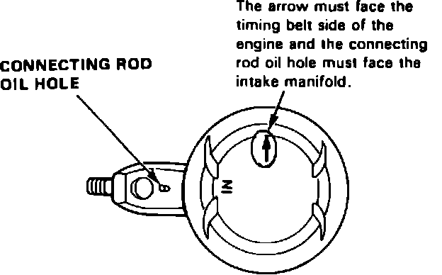
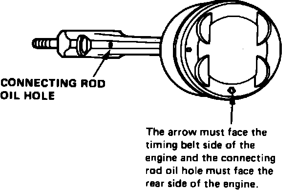
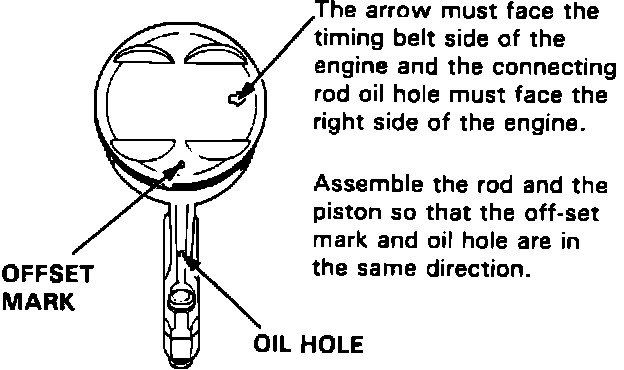
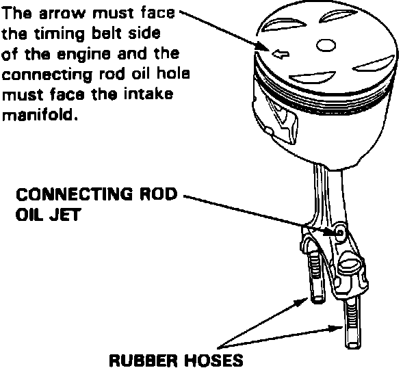

Assembly
Fig. 70 Piston & Connecting Rod Assembly:

Fig. 71 Piston & Connecting Rod Assembly:

Fig. 72 Piston & Connecting Rod Assembly:

Fig. 73 Piston & Connecting Rod Assembly:

On Integra models, when installing piston and connecting rod assemblies into engine, the arrow on piston head must face timing belt side of engine and connecting rod oil hole must face intake manifold, Fig. 70. On 1989-90 Legend models, when installing connecting rod and piston assemblies into engine, the arrow on piston head must face rear side of engine and the connecting rod oil hole must face the rear side of the engine, Fig. 71. On 1991-92 Legend models, when installing connecting rod and piston assemblies into engine, the arrow on the piston head must face the timing belt side of the engine and the connecting rod oil hole must face the right side of the engine, Fig. 72. On Vigor models, the arrow must face the timing belt side of the engine and the connecting rod oil hole must face the intake manifold, Fig. 73.